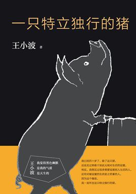

插队的时候，我喂过猪、也放过牛。假如没有人来管，这两种动物也完全知道该怎样生活。它们会自由自在地闲逛，饥则食渴则饮，春天来临时还要谈谈爱情；这样一来，它们的生活层次很低，完全乏善可陈。人来了以后，给它们的生活做出了安排：每一头牛和每一口猪的生活都有了主题。就它们中的大多数而言，这种生活主题是很悲惨的：前者的主题是干活，后者的主题是长肉。我不认为这有什么可抱怨的，因为我当时的生活也不见得丰富了多少，除了八个样板戏，也没有什么消遣。有极少数的猪和牛，它们的生活另有安排。以猪为例，种猪和母猪除了吃，还有别的事可干。就我所见，它们对这些安排也不大喜欢。种猪的任务是交配，换言之，我们的政策准许它当个花花公子。但是疲惫的种猪往往摆出一种肉猪（肉猪是阉过的）才有的正人君子架势，死活不肯跳到母猪背上去。母猪的任务是生崽儿，但有些母猪却要把猪崽儿吃掉。总的来说，人的安排使猪痛苦不堪。但它们还是接受了：猪总是猪啊。
阅读全文>> 2018.8.21插队的时候，我喂过猪、也放过牛。假如没有人来管，这两种动物也完全知道该怎样生活。它们会自由自在地闲逛，饥则食渴则饮，春天来临时还要谈谈爱情；这样一来，它们的生活层次很低，完全乏善可陈。人来了以后，给它们的生活做出了安排：每一头牛和每一口猪的生活都有了主题。就它们中的大多数而言，这种生活主题是很悲惨的：前者的主题是干活，后者的主题是长肉。我不认为这有什么可抱怨的，因为我当时的生活也不见得丰富了多少，除了八个样板戏，也没有什么消遣。有极少数的猪和牛，它们的生活另有安排。以猪为例，  种猪和母猪除了吃，还有别的事可干。就我所见，它们对这些安排也不大喜欢。种猪的任务是交配，换言之，我们的政策准许它当个花花公子。但是疲惫的种猪往往摆出一种肉猪（肉猪是阉过的）才有的正人君子架势，死活不肯跳到母猪背上去。母猪的任务是生崽儿，但有些母猪却要把猪崽儿吃掉。总的来说，人的安排使猪痛苦不堪。但它们还是接受了：猪总是猪啊。
阅读全文>> 2018.8.21插队的时候，我喂过猪、也放过牛。假如没有人来管，这两种动物也完全知道该怎样生活。它们会自由自在地闲逛，饥则食渴则饮，春天来临时还要谈谈爱情；这样一来，它们的生活层次很低，完全乏善可陈。人来了以后，给它们的生活做出了安排：每一头牛和每一口猪的生活都有了主题。就它们中的大多数而言，这种生活主题是很悲惨的：前者的主题是干活，后者的主题是长肉。我不认为这有什么可抱怨的，因为我当时的生活也不见得丰富了多少，除了八个样板戏，也没有什么消遣。有极少数的猪和牛，它们的生活另有安排。以猪为例，种猪和母猪除了吃，还有别的事可干。就我所见，它们对这些安排也不大喜欢。种猪的任务是交配，换言之，我们的政策准许它当个花花公子。但是疲惫的种猪往往摆出一种肉猪（肉猪是阉过的）才有的正人君子架势，死活不肯跳到母猪背上去。母猪的任务是生崽儿，但有些母猪却要把猪崽儿吃掉。总的来说，人的安排使猪痛苦不堪。但它们还是接受了：猪总是猪啊。
阅读全文>> 2018.8.21